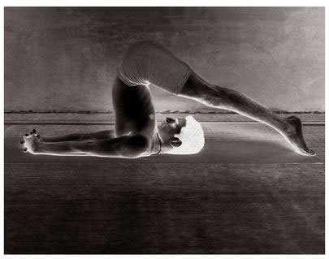
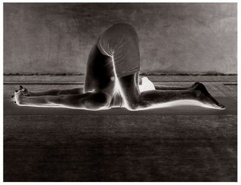

There are thirteen vinyasas in this asana and the 8th is the state of the asana.
METHOD
To start, lie down, as in Sarvangasana; this is the 7th vinyasa. Then, doing puraka, proceed to the 8th vinyasa of Sarvangasana, which is Karnapidasana’s state and, doing rechaka, lower the legs to the floor, as in Halasana, bring the knees to the floor, take hold of the ears tightly with the knees, lower the arms to the floor, lock the fingers, and do puraka and rechaka as much as possible; this is the 8th vinyasa. In the state of this asana, the stomach should be drawn in fully without tightening the anus, and rechaka and puraka performed.
HALASANA

KARNAPIDASANA
